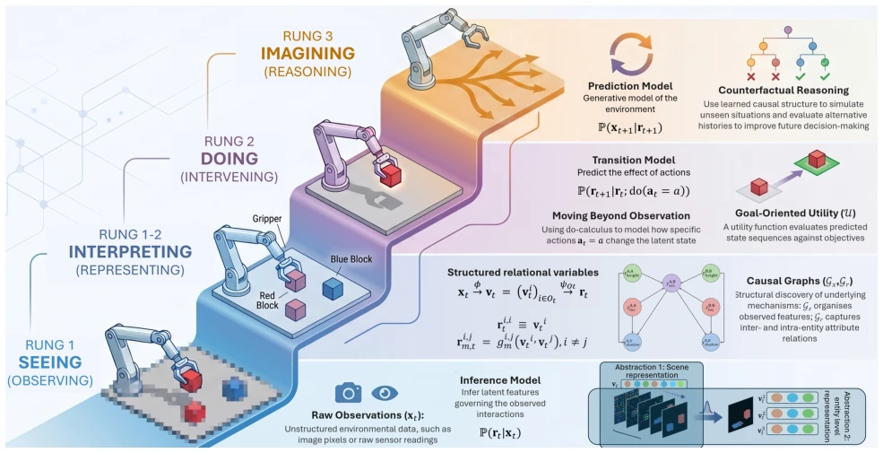
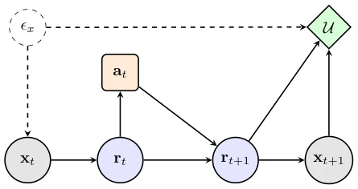

This paper attempts to inject soul into the overused term "World Model", arguing that it is not enough to just predict the next frame, one must also understand causal structure. The authors decompose WM into three levels: observation, representation, and structure, attempting to unify existing work using a causal inference framework. The highlight lies in the formal definition and identifiability analysis, turning the vague "understanding the world" into concrete mathematical constraints. But the drawbacks are obvious: the whole paper is theoretical derivation, without experimental verification, like a philosophical speculation that hasn't landed. For those working on embodied AI, this theory is sexy, but whether the code can run successfully is still debatable. After all, there is a huge engineering gap between knowing "causality" and being able to "control". It is more like a "theoretical manifesto" rather than an "engineering guide". Although the authors claim to connect representation learning and causal discovery, whether this "unified perspective" is truly more practical than existing black-box models without empirical evidence still remains highly questionable.
研究动机Motivation
当前世界模型（WM）研究面临定义模糊的困境。Ha and Schmidhuber [2018] 提出的原始概念常被泛化为各种预测器，但缺乏明确的因果语义。Dreamer [Hafner et al., 2025] 等模型虽能预测状态，但潜在状态未必有因果解释。LeJEPA [Klindt et al., 2026] 虽涉及可识别性，但未指定因果变量。现有工作往往将WM操作化为转移模型 [Richens et al., 2025]，忽略了实体属性和交互。作者指出，智能体需要支持因果推理（干预、反事实）的WM，而不仅仅是分布外预测。因此，需要统一视角，从观测到表示再到结构，明确哪些变量可识别，哪些需先验知识。这解决了现有模型在分布外泛化和鲁棒性上的理论缺失，为具身智能的决策提供了更坚实的数学基础。
Current World Model (WM) research faces the dilemma of ambiguous definitions. The original concept proposed by Ha and Schmidhuber [2018] is often generalized into various predictors, but lacks clear causal semantics. Models like Dreamer [Hafner et al., 2025] can predict states, but latent states may not have causal explanations. LeJEPA [Klindt et al., 2026] involves identifiability but does not specify causal variables. Existing work often operationalizes WM as transition models [Richens et al., 2025], ignoring entity attributes and interactions. The authors point out that agents need WM supporting causal reasoning (intervention, counterfactuals), not just out-of-distribution prediction. Therefore, a unified perspective is needed, from observation to representation to structure, clarifying which variables are identifiable and which require prior knowledge. This solves the theoretical gaps in OOD generalization and robustness of existing models, providing a more solid mathematical foundation for embodied AI decision-making.

Figure 1: Conceptual overview of a Causal Ladder of CWM: illustrated as a four-level progression from perception to intervention and imagination. Rungs 1, 2 and 3 follow Pearl’s causal hierarchy [Pearl and Mackenzie, 2018, Bareinboim et al., 2022]. At the base, Rung 1 represents raw sensory perception, where raw observations xt are processed by an inference model to infer entity-level features vt. In Rung 1–2, these features are lifted into the structured relational state rt, whose diagonal blocks retain entity attributes and whose off-diagonal blocks encode interactions. The graph Gr represents causal mechanisms over this state; Gx is used only when observations have themselves been decomposed into explicit variables. At Rung 2, agents can manipulate entities to maximise their utility. At
方法Method
核心是形式化定义 Causal World Models (CWM)。首先，提出关系变量（Relational Variables），将实体属性（对角块）和实体间交互（非对角块）结构化。CWM 被定义为元组 (X, A, {RO}, P, U)，包含观测空间、动作空间、关系潜在状态空间、转移分布和效用函数。模型分解为四个组件：推断模型（观测到关系状态）、转移模型（状态到状态）、预测模型（状态回观测）、效用函数。其次，引入因果影响图（Fig 2）可视化依赖关系。最关键的是可识别性分析，区分强可识别性和等价性可识别性。作者提出组件级等价性标准（Table 1），如潜在状态允许仿射变换，因果图允许马尔可夫等价类。这明确了数据能学到什么，哪些需要假设。Pipeline 是从观测 xt 经 ϕ 映射到实体特征 vt，再经 ψ 组装成关系状态 rt，最后通过因果图 Gr 建模机制。该框架将世界建模转化为一个多阶段的决策过程，强调了结构学习的重要性，并明确了数据与假设的边界。在关系变量定义中，作者区分了实体属性块和交互块，使得状态表示具有语义可解释性。
The core is the formal definition of Causal World Models (CWM). First, Relational Variables are proposed, structuring entity attributes (diagonal blocks) and interactions between entities (off-diagonal blocks). CWM is defined as a tuple (X, A, {RO}, P, U), containing observation space, action space, relational latent state space, transition distribution, and utility function. The model is decomposed into four components: inference model (observation to relational state), transition model (state to state), prediction model (state back to observation), utility function. Second, Causal Influence Diagrams (Fig 2) are introduced to visualize dependency relationships. The most critical part is identifiability analysis, distinguishing strong identifiability and equivalence identifiability. The authors propose component-level equivalence criteria (Table 1), such as allowing affine transformations for latent states and Markov equivalence classes for causal graphs. This clarifies what data can learn and what requires assumptions. The pipeline maps observation xt via ϕ to entity features vt, then assembles via ψ into relational state rt, finally modeling mechanisms through causal graph Gr. This framework transforms world modeling into a multi-stage decision process, emphasizing the importance of structure learning, and clarifying the boundary between data and assumptions. In the definition of relational variables, the authors distinguish entity attribute blocks and interaction blocks, making state representations semantically interpretable.

Figure 2: Causal influence diagram for the CWM factorisation. Circles denote random variables: grey circles are observations and blue circles are relational variables. The orange rectangle is the decision node, and the green diamond is the utility node. Solid arrows denote the dependencies in Definition 3: xt 7→rt is infer- ence, (rt, at) 7→rt+1 is transition, rt+1 7→xt+1 is prediction. Dashed arrows indicate possible latent confounders.
This paper is a theoretical perspective paper, containing no experimental section. The paper does not mention datasets, baseline models, or evaluation metrics. The authors' main contribution lies in the construction of the theoretical framework and formal definition, rather than empirical verification. The conclusion mentions that future work should turn towards "strict mathematical formalization, practical algorithms, and empirical testing", and extend to partial observability and latent confounding. Therefore, experimental results or ablation analysis cannot be provided. This reflects the typical characteristic of the current causal representation learning field transitioning from theoretical derivation to algorithm implementation, where theoretical completeness is prioritized over engineering verification. For readers expecting to see specific performance improvements, this may be a "disappointing" submission, but for researchers seeking theoretical clarity, it provides important conceptual tools.